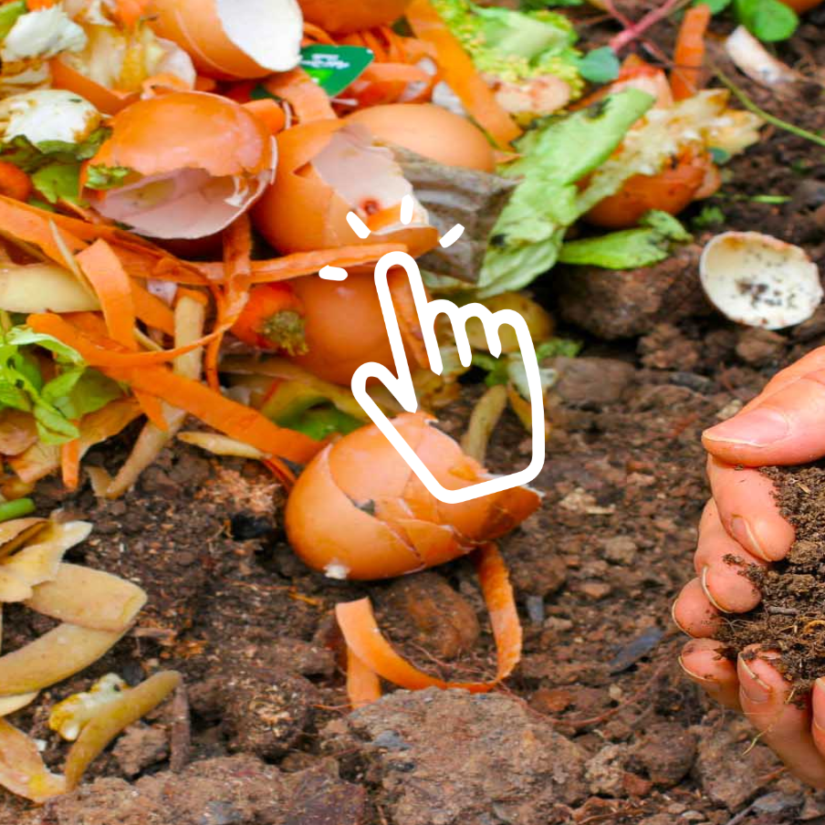

En el marco de la Licenciatura de Comunicación Visual, el curso de P.A.I II expone todos los trabajos finales del año 2019 a la comunidad académica y el público en general.
Los proyectos consistieron en desarrollar un producto interactivo con el objetivo de generar conciencia sobre un tema dentro del concepto "ciudadanía". El objetivo es buscar una experiencia de usuario reflexiva a partir de ese producto interactivo. Todos los proyectos están aquí:





Abal - García - Gil
El fin de esta propuesta iterativa es tomar concientización sobre el daño que puede provocar el consumo de ropa. La propuesta interactiva de concientización tiene como objetivo reutilizar prendas dándoles un nuevo uso o valor, donar ropa que ya no utilizas, fomentar el intercambio de prendas, apostar por la compra de prendas de producción local, comprar ropa de segunda mano y prestar atención a la composición de las prendas.

Abraham - Galli - Godoy
Desarrollar una experiencia en la que el usuario pueda ponerse en los zapatos de una persona con ansiedad social, reflejado en un día. Se presentan situaciones en las cuales el usuario tiene el poder de decidir afectando el recorrido del día. En los casos donde se presenta mayor ansiedad, el usuario solamente tiene una opción para seguir, evidenciando la limitación que provoca la ansiedad social a la hora de interactuar.

Acuña - Abreu - Quintela
El fin de esta propuesta interactiva es tomar concientización sobre los malos hábitos que solemos tener al utilizar materiales de plástico en combinación con la decisión de no clasificar y reciclar los envases o simplemente no hacerlo de manera correcta. Asimismo, limpiar objetos o elementos que creemos que no contaminan, en realidad pueden tener un impacto negativo en el medio ambiente, entre otros muchos hábitos dañinos para el bienestar de nuestras costas.

Alba - Cazeres - Fernández

Alentorn - Manggiarotti - Peirano
El objetivo de este proyecto es concientizar sobre el reconocimiento de una crisis de ansiedad y el correcto accionar para colaborar con la persona que la sufre. Mediante un audiovisual, el usuario interactúa a través de la experiencia y a su vez se brinda información sobre el problema.

Alves - Perez
El tema abordado fue las normas de tránsito, son necesarias en cada región y se establecen para garantizar el bienestar de sus habitantes, y es por eso que resulta indispensable conocerlas a fondo y respetarlas. La propuesta interactiva por lo tanto, se basa en representar situaciones cotidianas en las que el usuario tenga que decidir cómo actuar frente a las normas de tránsito con sus futuras consecuencias.

Amado - Baitx - Carballo - Caramellino
El fin de esta propuesta interactiva es tomar concientización y acercar a la gente acerca del uso de pesticidas y otros productos que tienen los alimentos que consumimos, entendiendo nosotros que, al plantar lo que sea, ya estaríamos reduciendo en nuestro cuerpo ese daño. La única solución no solo es evitar el supermercado o hacer nuestra propia huerta, también comprar vegetales a pequeños productores orgánicos es una muy buena idea.

Amaral - Bourdiel - Cioli
El objetivo central del producto presentado es la concientización del impacto ambiental de nuestras acciones cotidianas, dirigido a un público que consideramos que tendrá un papel crucial en el manejo de nuestro ecosistema en los años que están por venir, tomando en cuenta que la adaptación de prácticas amigables con nuestro ambiente es vital que sea inculcada desde edades tempranas.

Ayo - Duque - Gasco

Bartel - Vizcaino
Berguer - Silvera - Viera
El tema abordado en este proyecto fue las cianobacterias. El objetivo es explicar qué son, cómo se reproducen y qué efectos generan en las personas. El producto interactivo se basa en un desplazamiento por el mismo, en el cual el usuario interactúa de forma metafórica para un mayor entendimiento del tema planteado.

Blanco - Aguirrezabal - Hernández
Se abordó el tema de usos, desperdicios y contaminación del agua. Debemos dimensionar el cuidado del uso de ese recurso y apuntar a generar conciencia que “sin agua, no hay vida”. El proyecto trata mediante la interacción, brindar recursos sobre desde donde podemos aportar al problema y que está ocurriendo a nivel global con el agua.

Bolón - Fungi - Moroni
Se aborda la temática de género, con el fin de visibilizar el lugar de la mujer en FADU. A través de distintas interacciones, evidenciar como el lugar de la mujer se va desplazando a medida que los grados docentes aumentan; haciendo un recorrido en valores y gráficas desde los ingresos, los colaboradores y las colaboradoras honorarias y los grados.

Cabrera - García - Gúzman
El tema abordado fue la ley de riego. El equipo notó el año pasado, cuando se realizó la recolección de firmas, que el tema no logró llegar a la mayor parte de la población y por lo tanto no se alcanzó a recolectar la cantidad de firmas necesarias para la derogación de la ley. Entendemos que es un tema muy complejo y enredado,´por lo que creemos pertinente lograr un producto que logre sintetizar esta problemática haciéndolo de una manera digerible para un público más amplio. Buscamos entonces, demostrar a través del juego el impacto negativo que esta ley significa para el medio ambiente y diversos ecosistemas en Uruguay.

Calache - Isasa - Bassignana

Calzada - Barrera - Castillos
La Reanimación Cardiopulmonar (RCP) es un conjunto de maniobras destinadas a asegurar la oxigenación de los órganos vitales cuando la circulación de la sangre de una persona se detiene súbitamente. En Uruguay mueren unas 5.000 personas cada año a causa de la muerte súbita (12-15 fallecidos por día). La mayoría acontece en el ámbito extra-hospitalario, ocurren en el hogar, lugares de trabajo, vía pública. La probabilidad de sobrevivir sin secuelas aumenta 90% si la víctima es asistida con RCP básica desde el primer minuto de identificada la situación. Si la víctima no es asistida la mortalidad aumenta 10%por minuto. El objetivo principal que se plantea es generar conciencia en la sociedad a través de un producto interactivo.

Camejo - Vidal - Zunini
El tema abordado por el equipo fue la enfermedad de alzheimer. El proyecto interactivo consiste en poner al usuario en una experiencia inmersiva en la que viva en persona con la enfermedad.La problemática planteada se da de forma gradual a medida que el usuario interactúa y completa la foto.

Carvalho - Panizzolo - Sotelo
Se pretende tomar concientización a través de esta pregunta: ¿Qué es el acoso callejero?, es todo acto de naturaleza o connotación sexual ejercida por una persona en un espacio público contra una niña o mujer sin su consentimiento. Generalmente provoca malestar o repugnancia, intimidación, hostilidad, degradación y humillación.

Casañas - Curbelo - Reyes

Casas - Ricobaldi - Rissolini
Bechdel es una plataforma de entretenimiento en línea cuyo objetivo principal es la difusión de contenidos audiovisuales que promuevan la igualdad de género, cumpliendo con estándares mínimos para evitar la brecha de género. Las producciones que estarían disponibles en esta plataforma, cumplen con los requisitos que plantea el Test de Bechdel creado en 1985 por la dibujante Alison Bechdel. El test, originario del cómic “Unas lesbianas de cuidado” (en inglés Dykes to Watch Out For o DTWOF) de Alison Bechdel, es un método que se utiliza para evaluar si un guión de película, serie, cómic u otra representación artística cumple con los estándares mínimos para evitar la brecha de género. Tiene como objetivo hacer visible que en una gran cantidad de producciones artísticas, la presencia de un personaje femenino se debe solamente a su vínculo con un personaje masculino existente, y la relevancia del personaje femenino deriva de dicho vínculo.
Cavalcanti - Pereyra - Oten
La temática son los mitos creados acerca del aborto. El objetivo es concientizar a las personas acerca del aborto y desmistificar algunos mitos.

Cazabonett - Silvera - Souto
El objetivo se basa en causar impacto en el usuario, con el fin generar conciencia sobre la problemática y así, incentivar a no tomar alcohol si manejan, por medio de un producto interactivo centrado en el usuario. La propuesta interactiva se basa opciones que el usuario tomará en relación a la ingesta de alcohol.

Confalonieri - Menénedez - Piñeyrua
Mediante el producto interactivo, el usuario aprende diferentes formas de discriminación que se dan en situaciones cotidianas, abarcando los temas sobre discapacidad, racismo y erofóbia, mediante la realización de ciertas acciones u omisiones a través de una narrativa, tomando como referencia la escala de Allport para ilustrar dichas situaciones. El objetivo es generar en el usuario una concientización y reflexión de dichos tipos de discriminación que él mismo pueda estar realizando sin saberlo conscientemente.

CraigdallieFehérGiordano
Analizando con el equipo, notamos que hay mucha información sobre el medio ambiente y conductas de reciclaje pero falta compromiso en cuanto a accionar en favor de éste. Por eso pretendemos crear una herramienta que sirva de autoconocimiento a través de la interacción y promoviendo de forma lúdica factores que promuevan la concientización del cuidado del medio en que vivimos.

De Léon Menéndez - Moreira
La temática abordada para la realización del proyecto es la alimentación saludable. La idea es concientizar a los padres y madres o tutores que tengan a cargo a un niño y sean responsables de su alimentación de que ellos son los encargados de la salud de los mismos. Además los niños, no son conscientes de eso en profundidad y a la larga si no hay cuidado y buena alimentación terminan perjudicados.

Delorenzi - Fernàndez - Frattini
Echar - García - Rodriguez
El tema abordado es la contaminación del mar debido a los plásticos arrojados por el ser humano. Se pretende pensar y tratar de hacer visible ese problema, por lo que se crea un espacio para mostrar la realidad que están sufriendo los océanos y las especies marinas. La propuesta interactiva se basa en un juego en el cual el usuario es una tortuga, y el objetivo es esquivar todos los objetos hechos con plástico.

Fagundez Milano Moreira
El tema abordado es sobre la igualdad de género, precisamente en la importancia de concientizar e inculcar buenas conductas desde la infancia. A través de preguntas retóricas e ilustraciones, se invita a reflexionar al usuario sobre la temática abordada. Se busca comunicar que no se debe encasillar a las personas mediante el género, es importante dejar que los niños sean libres y decidan qué es lo que los hace felices.

Fernández - Fitipaldi - Vázquez
El compost es un tipo de abono orgánico que se prepara con diferentes materiales orgánicos, los cuales podemos encontrar en nuestra casa o comunidad aportando nutrientes y mejorando la estructura del suelo. Hacer compost casero es una actividad ideal para toda la familia, es una buena forma de acercar a los más chicos a la naturaleza, de transmitir valores de consumo responsable, reciclaje, respeto por el medio ambiente. La idea es tomar concientización en enseñar al usuario a clasificar los residuos y con ello poder crear su propio compost, de esta manera incentivar a que lo hagan en sus hogares.

Ferreira - Nicoláis - Pedragosa
El tema escogido fue la Celiaquía, enfermedad autoinmune que puede afectar a cualquier persona, independientemente de su edad, sexo y genética. La propuesta interactiva por lo tanto, se basa en la concientización de un público principalmente adulto, a quien a cualquiera le puede suceder y a quien su bolsillo se verá altamente afectado solamente por un cambio de alimentación necesario.

Galván - DeBrito
El producto pretende explicar el fenómeno instagram y cómo la sociedad se relaciona con el.

García - Garín - Olivera
Como estudiantes de la LDCV, indagaron en cuáles podrían ser algunas de las problemáticas más comunes a la hora de enfrentarse a una entrega, para ello eligieron enfocarse en la materia DVC. Luego hicieron un relevamiento entre estudiantes de las generaciones 2017 y 2018, observaron que se repetían algunas problemáticas a la hora de trabajar en equipo, de allí se pretende concientizar sobre el orden y la organización a la hora de delegar tareas y funciones a cada integrante en el proceso de realizar una entrega.

García - Gonzalez - Padilla
Abordaron la temática Grooming, ya que hoy en día, con el avance de las redes sociales se han incrementado los casos de perfiles falsos. Muchos inofensivos pero otros con fines perjudiciales. Grooming consiste en el acoso por parte de adultos que a través de engaños mantienen conversaciones con los menores por medio de contactos online, por ejemplo, vía chats, a través de la cual intentan conseguir imágenes de contenido erótico para extorsionar y posteriormente amenazar y exigir un encuentro físico que podría terminar en violación. El usuario entra en recorrido de una red social y se pretende concientizar a adolescentes sobre lo que puede llegar a suceder si dan con un perfil falso en ellas, también a las personas que tienen menores de edad a cargo para que estén atentos y acompañen a los mismos en el uso correcto y seguro.

Gareppe - Gutiérrez - Urbín
La idea del proyecto es concientizar al usuario sobre el tema enfermedad de Alzheimer, a través de una experiencia interactiva que lo haga vivenciar de manera figurativa las consecuencias que trae la enfermedad en quienes la padecen.

Güenaga
La temática abordada es sobre el tránsito y las principales normas que debemos conocer y respetar para una buena convivencia. El proyecto consiste en desarrollar un producto interactivo con el objetivo de generar conciencia sobre un tema dentro del concepto de ciudadanía. El tema elegido es tránsito. Nuestro objetivo es generar una experiencia de usuario reflexiva a partir de un producto interactivo.

Huergo - Goio - Palmieri
“Juntala “ es un proyecto que busca concientizar e informar al usuario sobre la problemática de las heces de nuestras mascotas en la vía pública y cómo esto afecta en lo sanitario y medioambiental principalmente, para esto desarrollamos un sitio didáctico e interactivo donde el usuario puede ponerse bajo la piel de un ciudadano que tiene que vivir en una ciudad esquivando los desechos de las mascotas por la vía pública.

Ibanez - Rodríguez - Miglionico
Inchauspé - Nuñez - Rocha
La temática abordada es la Educación Sexual. La idea del producto interactivo, es a partir de una experiencia lúdica de intercambio pregunta-respuesta, el aprendizaje del joven adolescente sobre el tema.

Javiel - González - Noble
La problemática encontrada es la no existencia de ciclovías y bicisendas para fomentar el uso de la bicicleta. El presente proyecto pretende alertar al estimado ciclista sobre rutas seguras para la bicicletas en la ciudad y otras que no. El objetivo de la propuesta interactiva es hacer un llamado de atención sobre el riesgo de los ciclistas, aún tomando las medidas de seguridad propias: chaleco, casco, espejos y luz.

Balian - Tort
la temática abordada es en torno al medioambiente, con enfoque en el consumo de plásticos de un solo uso y en el impacto que genera en la vida marina. La propuesta interactiva es un juego, consiste en un personaje principal, la tonina Francisca , la cual debe ir esquivando los residuos plásticos que se encuentran en el mar.

Molina - Meneses
La temática definida fue la marginalidad. Desde ese concepto generalizado por medio de una dinámica similar al “memory” el usuario debe hacer coincidir la carta de la figura incompleta, con su respectiva parte faltante

Moreira - Parodi - Zunino
La temática abordada es el ciberacoso, es una problemática importante y se le puede dar una atención mayor. EL proyecto interactivo se basa en una página de simulación a una red social, Twitter. Se inventó una historia con personas ficticias en la que el usuario será testimonio de un caso de acoso, queda en manos del usuario tratar de ver qué hacer en esa situación.
Robello - Ubilla - Tate
Este proyecto investigó cuáles eran los ítems de uso cotidiano más contaminantes del mundo y cómo incidían a gran escala. También sobre los procesos de contaminación, procesos de reciclaje, cómo prevenir la contaminación, etc. La idea del producto interactivo es generar una experiencia interactiva para el usuario, en la cual éste pueda aprender sobre las implicaciones que tienen pequeñas acciones diarias en el medio ambiente.

Rodríguez - Pozzo - Acevedo
El tema abordado en este proyecto es en torno al micromachismo. El objetivo es concientizar sobre los problemas a través de un juego simple que deje en evidencia las acciones cotidianas que son normalizadas e imperceptibles y que atentan contra la autonomía de las mujeres.

Rodríguez - Susena - Charquero
El tema se basa en la adopción y el cuidado responsable de animales domésticos y el objetivo es tomar conciencia sobre eso, tanto en animales comprados como adoptados. El producto interactivo se basa en deslizarse sobre la interfaz, y toma opciones que crea pertinente para lograr el correcto entendimiento del tema abordado.